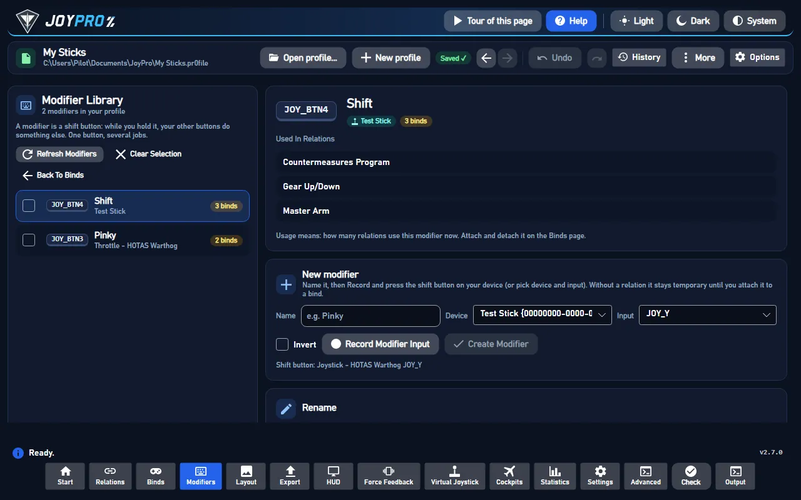
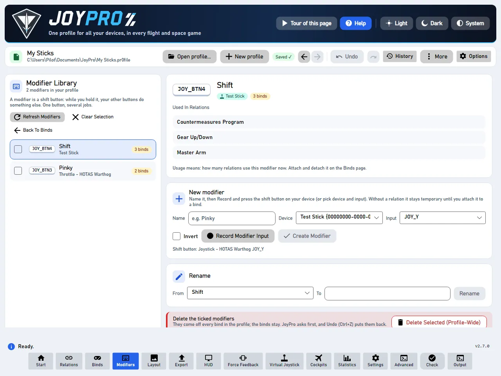

#Obnoviť modifikátory
TlačidlopopísanéZnova načíta modifikátory profilu a znova vytvorí karty s počtami ich použití.
Nič nemení.
Modifikátor je prepínacie tlačidlo: kým ho držíte, vaše ostatné tlačidlá robia niečo iné. Jedno tlačidlo, viac úloh. Stránka Modifikátory uvádza prepínacie tlačidlá vášho profilu, ukazuje, kde sa každé používa, a vytvára, premenúva a odstraňuje ich. Modifikátor dáte na väzbu na stránke Väzby; export ho zapíše do každej hry, ktorá modifikátory pozná.


Väčšina pák má menej tlačidiel, než má moderné lietadlo funkcií. Modifikátor ich zdvojnásobí: vyberte jedno tlačidlo ako prepínacie (často páčku pod malíčkom) a každé ďalšie tlačidlo dostane druhú úlohu, kým ho držíte.
Po ďalšom exporte potrebuje väzba držané prepínacie tlačidlo: v DCS sa modifikátor zobrazí v zozname modifikátorov lietadla a v bunke ovládania ako „Malíček + JOY_BTN1“. Hry bez modifikátorov (pozrite stránky hier) dostanú väzbu bez neho a Kontrola takéto väzby uvedie.
drafts.json), kým ho nepripojíte na stránke Väzby; keď profil znova otvoríte, vráti sa.Vytvorte modifikátor
flowchart TD N["Nový modifikátor:<br/>názov + Zachytiť"] --> C["Vytvoriť modifikátor"] C --> A["Na väzbe,<br/>ktorú ste vybrali"] C -.-> T["Dočasný modifikátor:<br/>pripojte ho na stránke Väzby"] T -.-> A
Pri exporte
flowchart TD P["Väzba<br/>s modifikátorom 'Pinky'"] --> E["Export"] E --> D["DCS: zoznam modifikátorov<br/>lietadla,<br/>'Pinky + JOY_BTN1'"] E --> O["Ostatné hry: vlastný<br/>tvar kombinácie, alebo žiadny"]


View model: MainWindowViewModel.cs (RefreshModifiersAsync, CreateModifierOnSelectedBindAsync, RenameModifierAsync, DeleteSelectedModifiersEverywhereAsync, RecordModifierInputAsync), dočasné modifikátory v pendingModifiersByName, uchovávané automatickým ukladaním (profile-history). Modifikátor sa zapisuje na väzbu ako reťazec reformer (názov, zariadenie, vstup, invertovaný).
Nástroj: engine binds modifier list naplní knižnicu, engine binds modifier add vloží modifikátor na väzbu vzťahu, engine binds modifier rename a engine binds modifier remove ho zmenia a odstránia; stránka potom znova načíta engine binds list. Zachytávanie používa rovnakú službu ako stránka Väzby (DirectInput a klávesnica, časový limit a zahrievanie zachytávania z Nastavenia > Väzby).
Pre každú hru: DCS zapíše modifikátory do <aircraft>\modifiers.lua a do reformers každej väzby; IL-2 a hry s registrom používajú vlastnú syntax kombinácií, ak ju majú, a opätovný import vráti názvy (Import).
Dokumentácia funkcií za touto stránkou, generovaná z repozitára:
9 ovládacích prvkov, načítaných zo zdrojového kódu programu: 9 popísaných, 0 s faktami zo zdrojového kódu (tip, komentár v kóde, volanie nástroja), 0 ešte treba rozšíriť.
Znova načíta modifikátory profilu a znova vytvorí karty s počtami ich použití.
Nič nemení.
Zruší začiarknutie všetkých kariet modifikátorov. Zmenia sa iba začiarknutia.
Späť na stránku Väzby, kde pripájate a odpájate modifikátory na väzbe vzťahu.
Zaškrtne modifikátor pre Odstrániť vybrané a na pripojenie na stránke Väzby.
Tip Aktívne, kým tlačidlo NIE JE podržané
Nový modifikátor je aktívny, kým jeho tlačidlo nie je držané.
Hodí sa pre dvojpolohový prepínač: jedna poloha je bežná vrstva, druhá vrstva so shiftom.
Počká na ďalšie stlačenie a vyplní ním Zariadenie a Vstup.
Stlačte ho a potom stlačte tlačidlo shift.
Vytvorí modifikátor z názvu, zariadenia, vstupu a Invertovať.
Ak je vybraný vzťah, ide priamo na jeho väzbu; inak je to dočasný modifikátor uchovaný v profile, kým ho nepripojíte.
Dá modifikátoru v poli Od názov z poľa Na, vo všetkých väzbách, ktoré ho používajú.
V hre: nový názov sa zobrazí po ďalšom exporte.
Odoberie každý zaškrtnutý modifikátor zo všetkých väzieb profilu; väzby zostanú, bez shiftu.
Najprv sa opýta; Ctrl+Z ich vráti.